Modelos basados de Agentes
Los modelos basados en agentes (MBA) son colecciones de objetos, conocidos como agentes, que interactuan
a través de reglas simples. Esta interacción se da entre ellos y con el entorno sobre el que se
encuentran de manera dinámica, es decir, que evoluciona a través del tiempo. Estos modelos sirven para la exploración de
sistemas complejos y descentralizados donde se puede estudiar la autoorganización y emergencia de patrones.
Algunos campos que pueden estudiarse a través de los MBA son:
- Dinámica social
- Dinámica poblacional(Biología)
- Medicina: propagación de enfermedades
- Dinámica de transporte
- Economía: Mercados financieros
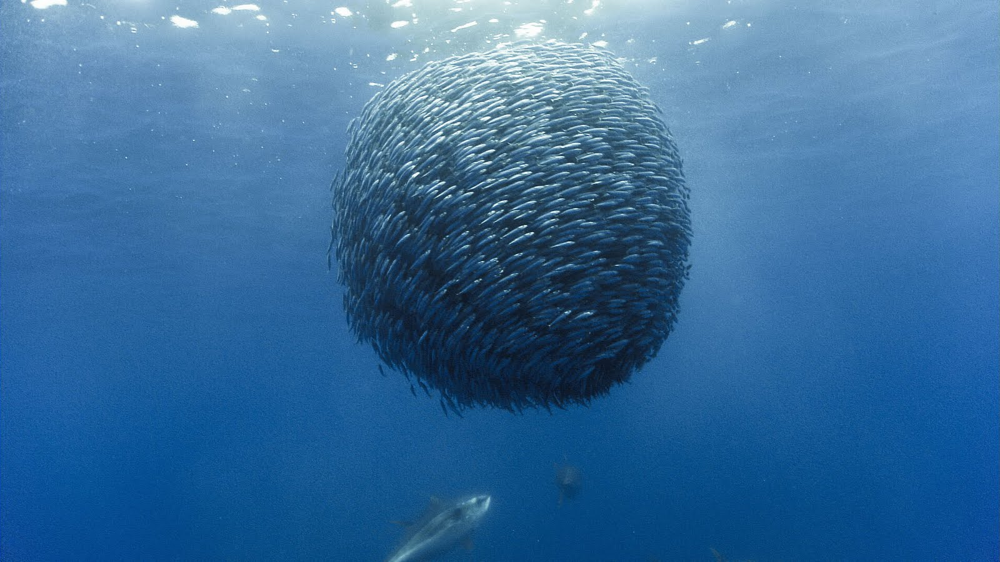
Modelo de Boids
El modelo de Boids fue propuesto por Craig Reynolds en 1987. En el simula el movimiento colectivo de grupos de seres vivos ("Boids")que carecen de un líder central por lo que el comportamiento de cada agentes depende de sus vecinos y el entorno en el que se desarrollan.
En este caso se considera el modelo en 2D por lo que cada boid tiene asignado un vector posición \( \mathbf{r_{i}} = (x_{i},y_{i}) \) y uno de velocidad \( \mathbf{u}_{i} = (u_{x_{i}},u_{y_{i}})\) los cuales son ajustados en cada paso.
Después se toma la distancia \( d\) entre dos agentes y se aplican tres reglas si el boid \( i \) analizado se encuentra dentro de un
radio de percepción \( R_{p}\), es decir, que si se cumple \( 0 < d < R_{p}\) entonces se aplica:
Si consideramos \(N_{i}\) el conjunto de vecinos.
- 1.- Regla de separación: Entre más cerca se encuentren dos agentes, estos generan mayor repulsión con el fin de evitar choques. Para calcularla: \[ \mathbf{s}_{i} = \sum_{j \in N_{i}} \frac{ \left( \mathbf{x}_{i} - \mathbf{x}_{j} \right) } { \| \mathbf{x}_{i} - \mathbf{x}_{j} \|^{2} } \]
- 2.- Regla de alineación: Cada agente trata de igualar la velocidad de los vecinos y moverse hacia la dirección media de sus vecinos. Para calculara: \[ \mathbf{a}_{i} = \frac{1}{|N_{i}|} \sum_{j \in N_{i}} \mathbf{u}_{j} - \mathbf{u}_{i} \]
- 3.- Regla de cohesión: El boid busca dirigirse al centro de masa de todos los vecinos proximos. Para calcularla: \[ \mathbf{c}_{i} = \frac{1}{|N_{i}|} \sum_{j \in N_{i}} \mathbf{x}_{j} - \mathbf{x}_{i} \]
Se considera la combinación de las reglas en la que los pesos \( \omega \) controlan su influencia de la siguiente manera: \[ \Delta u_{i} = \omega_{s} \mathbf{s}_{i} + \omega_{a} \mathbf{a}_{i} + \omega_{c} \mathbf{c}_{i} \] Donde se toman las siguientes consideraciones:
- Si no hay un vecino cerca se toma \( \mathbf{s}_{i} = \mathbf{a}_{i} = \mathbf{c}_{i} = \mathbf{0} \)
- Se considera una fuerza máxima, es decir, se limita la magnitud \( \Delta \mathbf{u}_{i} \)
- se considera una velocidad máxima, es decir, se limita la velocidad \( \mathbf{u}_{i} \)
A continuación se mostrarán los resultados de los experimentos realizados.
En la tabla se muestran los parámetros utilizados para las simulaciones, donde se comenzó con la regla solicitada
\( \omega_{s} > \omega_{a} \approx \omega_{c} \) y se fue modificando para buscar nuevos comportamientos.
| Simulación | Radio de percepción (r) | Rapidez máxima (v_max) | Fuerza máxima (f_max) | Peso separación (w_s) | Peso alineación (w_a) | Peso cohesión (w_c) |
|---|---|---|---|---|---|---|
| Boids 1 | 12.0 | 2.5 | 0.15 | 2.0 | 1.0 | 1.1 |
| Boids 2 | 12.0 | 2.5 | 0.15 | 4.0 | 0.2 | 0.2 |
| Boids 3 | 12.0 | 2.5 | 0.15 | 0.2 | 4.0 | 0.2 |
| Boids 4 | 12.0 | 2.5 | 0.15 | 0.2 | 0.2 | 4.0 |
| Boids 5 | 12.0 | 2.5 | 0.15 | 2.0 | 2.0 | 2.0 |
| Boids 6 | 6.0 | 2.5 | 0.15 | 3.3 | 1.0 | 1.1 |
| Boids 7 | 6.0 | 2.5 | 0.15 | 1.3 | 1.9 | 1.2 |
| Boids 8 | 6.0 | 2.5 | 0.10 | 4.3 | 0.3 | 0.2 |
| Boids 9 | 6.0 | 2.5 | 0.10 | 1.3 | 0.3 | 3.2 |
| Boids 10* | 6.0 | 2.5 | 0.10 | 1.8 | 0.5 | 2.2 |
* La simulación Boids 10 tiene una duración de 1000 frames mientras que las demás tienen una de 600 frames.
Las siguientes animaciones corresponden a las primeras 5 simulaciones:
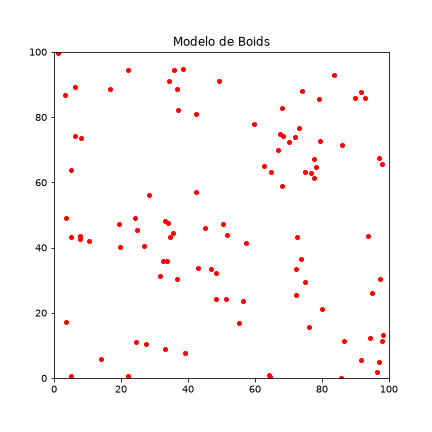
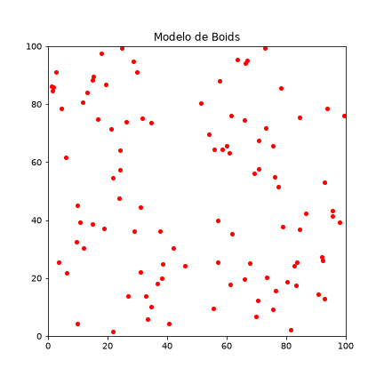
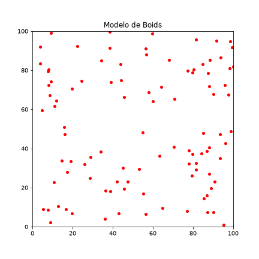
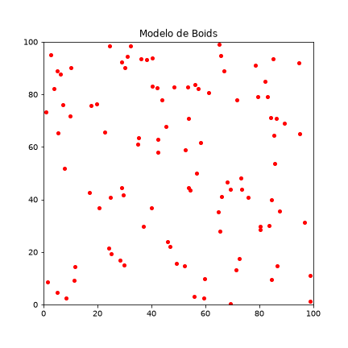
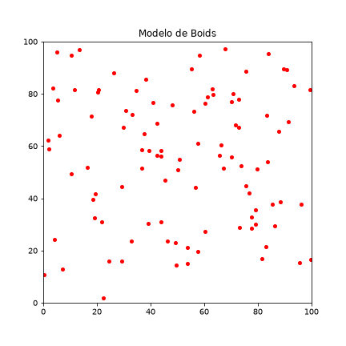
En el caso de Boids 1 se puede observar que se forman grupos que se unen al chocar, con una tendencia a
unificarse.
En Boids 2, se sigue respentando la condición inicial solicitada pero con un peso de separación mayor
y los otros pesos menores. Se observa como se forma un solo grupo donde los agentes mantienen distancia que podría
deberse a la el alto valor del peso de separación.
En Boids 3 tienden a formar grupos casi instantáneamente donde se forman distintos grupos que no parecen buscar
unirse pero al colisionar se fusionan de manera estable, esto puede deberse al bajo peso de separación y que las
velocidades se igualan por el peso de alineación.
En Boids 4 parece que buscan formarse grupos pero no tienen éxito y no lo logran cuando los chocan otros agentes
con mayor velocidad. Este comportamiento puede deberse a que, aunque se tenga un alto nivel de cohesión para intentar
juntarse, al tener bajo peso de alineación los agentes de velocidades altas no influyen en los agentes de velocidades
bajas y al atravesar los grupos, los rompen.
En boids 5 se observa un comportamiento similar al caso principal; solo que cuando un grupo absorbe a agentes externos,
estos se unen sin generar tanto rebote.
A las siguientes simulaciones se les modificó el "área de visión", es decir, se redujo el radio de percepción como se ve en la tabla de datos.
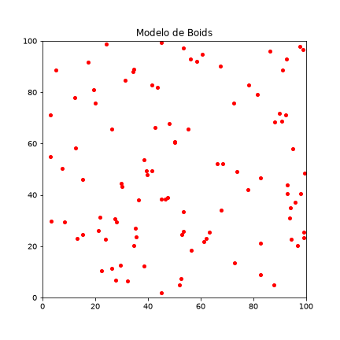
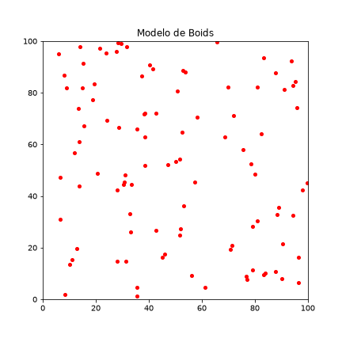
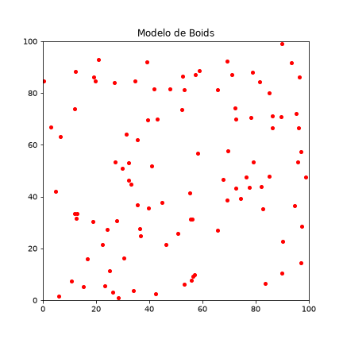
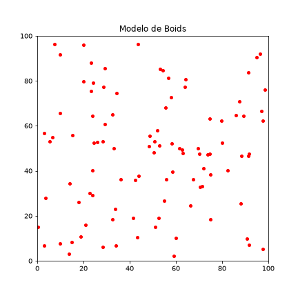
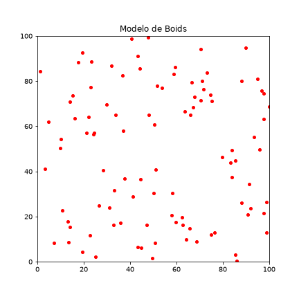
En Boids 6 se utilizaron nuevamenta las condiciones de peso de separación mayor a las otras dos y que las de
alineación y coheción sean similares. En este caso se también se observa la tendencia a formar un grupo.
En Boids 7 se forman varios grupos relativamente rápido y estos se fusionan al colisionar, algo similar al caso 3.
En Boids 8, parece que tiene un comportamiento aleatorio, sin embargo se puede observar que la mayoría de los agentes
tienen a emparejar las velocidades a pesar de su bajo peso de alineación. La estructura parece como un gran grupo
unificado pero con interior inestable. Lo último podría deberse al la reducción del radio de percepción junto al
alto peso de separación.
En boids 9 se ve que se intentan formar pequeños grupos que son muy inestables y se deshacen al chocar con otros
agentes lo que provoca una apariencia aleatoria.
En Boids 10, al principio parece que no hay formación de grupos; sin embargo, conforme avanza el tiempo, se puede
observar como comienzan a formarse grupos que se unen al colisionar.
Recursos
En la siguiento liga se encuentran los códigos utilizados: Códigos